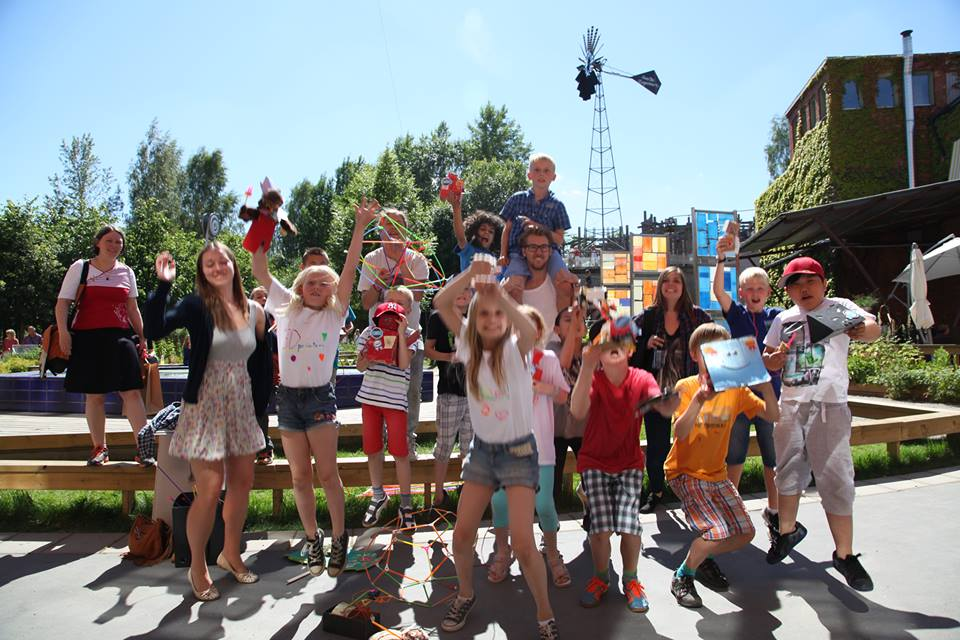

Kids Hack Day Club, Stockholm

Role: Co-founder, Program Coordinator
Context: A maker/hacker-themed after-school program
Time: Founded in February 2014, my involvement lasted 8 months until moving abroad
Team: Working closely with Carl Bärstad,
Murilo Polese and many other volunteers.
Kids Hack Day is a global series of free creative tech events for kids. We give kids tools to express their creativity, be curious and empathetic towards each other and the world around them. Kids Hack Day Club in Stockholm grew out of the massive interest after the one-day Kids Hack Day hackathon into a non-profit organization. Kids Hack Day Club was a bi-weekly hacker club were children could come together to work on projects and learn about new tools.

As the Program Coordinator, I was responsible for developing content, communication, event management, outreach, recruitment, budgeting and grant applications. The content we developed include programming Python in Minecraft Pi, creating 3D models, 3D printing Minecraft models, Strawbees, Arduino robots, soldering LED wearables and building interactive MaKey MaKey projects. We developed content that was relevant to the children, meeting them half-way by preparing projects that combine technology with their interests.
As the interest grew for the club, we managed to secure funding for the 2014-2015 school year and organize a one-week Summer Hack Camp in the summer of 2014 where we took the concept one step further. After working on projects for a week, we went to Tom Tits Experiments in Södertälje to hold an exhibition of the projects that the children created.